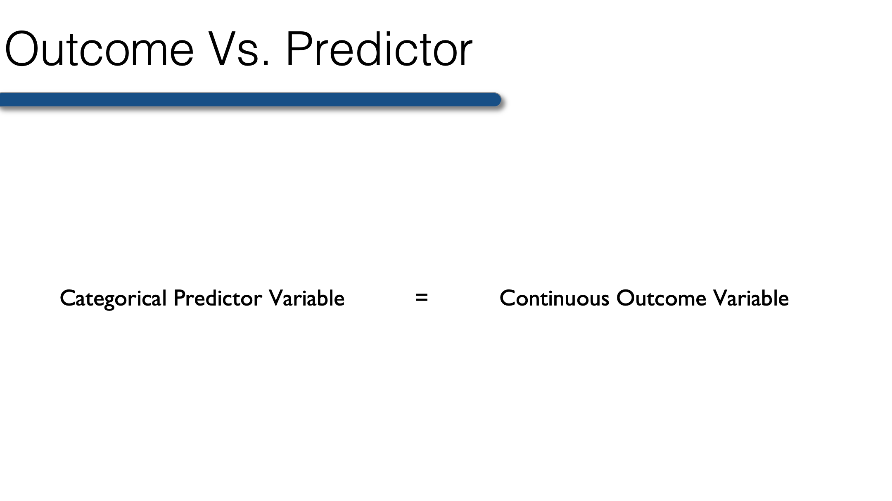
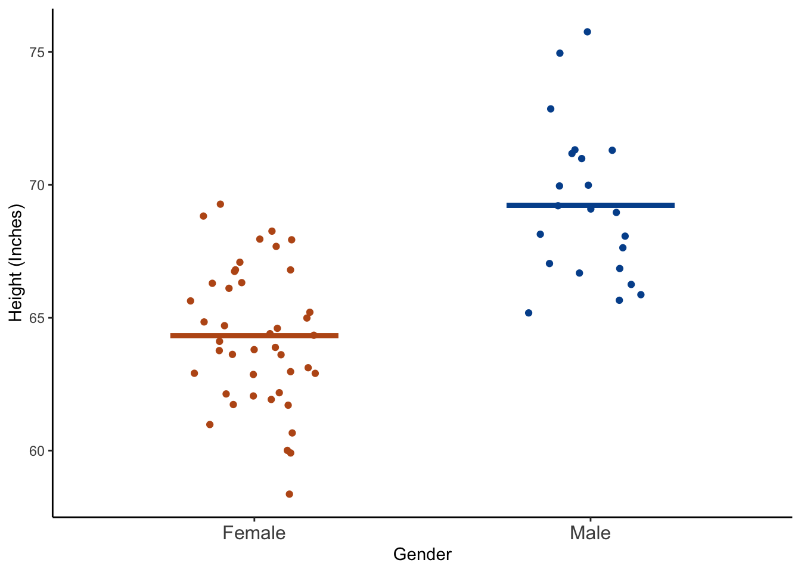
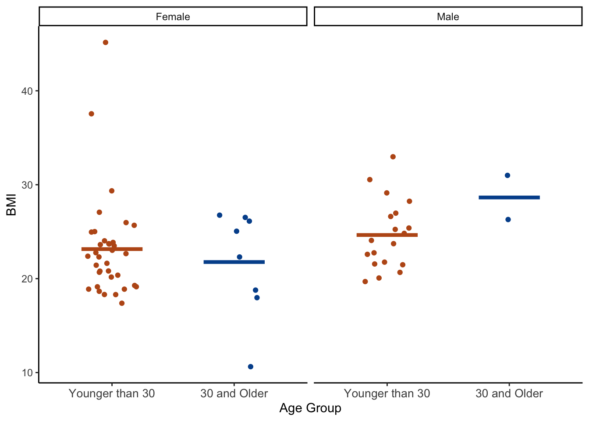

23 Describing the Relationship Between a Continuous Outcome and a Categorical Predictor
Up until now, we have only ever looked at the overall mean of a continuous variable. For example, the mean height for the entire class. However, we often want to estimate the means within levels, or categories, of another variable. For example, we may want to look at the mean height within gender. Said another way, we want to know the mean height for men and separately the mean height for women.
More generally, in this lesson you will learn to perform bivariate analysis when the outcome is continuous and the predictor is categorical.
Typically in a situation such as this, all we need to do is apply the analytic methods we’ve already learned for a single continuous outcome, but apply them separately within levels of our categorical predictor variable. Below, we’ll walk through doing so with R. To start with, we will again use our previously collected class survey data.
library(dplyr)
library(ggplot2)class <- tibble(
age = c(32, 30, 32, 29, 24, 38, 25, 24, 48, 29, 22, 29, 24, 28, 24, 25,
25, 22, 25, 24, 25, 24, 23, 24, 31, 24, 29, 24, 22, 23, 26, 23,
24, 25, 24, 33, 27, 25, 26, 26, 26, 26, 26, 27, 24, 43, 25, 24,
27, 28, 29, 24, 26, 28, 25, 24, 26, 24, 26, 31, 24, 26, 31, 34,
26, 25, 27, NA),
age_group = c(2, 2, 2, 1, 1, 2, 1, 1, 2, 1, 1, 1, 1, 1, 1, 1, 1, 1, 1, 1, 1,
1, 1, 1, 2, 1, 1, 1, 1, 1, 1, 1, 1, 1, 1, 2, 1, 1, 1, 1, 1, 1,
1, 1, 1, 2, 1, 1, 1, 1, 1, 1, 1, 1, 1, 1, 1, 1, 1, 2, 1, 1, 2,
2, 1, 1, 1, NA),
gender = c(2, 1, 1, 2, 1, 1, 1, 2, 2, 2, 1, 1, 2, 1, 1, 1, 1, 2, 2, 1, 1,
1, 1, 2, 1, 1, 2, 1, 1, 1, 2, 1, 1, 2, 2, 1, 2, 2, 1, 2, 2, 1,
1, 1, 1, 1, 1, 1, 1, 2, 2, 1, 1, 1, 1, 2, 2, 1, 1, 2, 1, 2, 1,
1, 1, 2, 1, NA),
ht_in = c(70, 63, 62, 67, 67, 58, 64, 69, 65, 68, 63, 68, 69, 66, 67, 65,
64, 75, 67, 63, 60, 67, 64, 73, 62, 69, 67, 62, 68, 66, 66, 62,
64, 68, NA, 68, 70, 68, 68, 66, 71, 61, 62, 64, 64, 63, 67, 66,
69, 76, NA, 63, 64, 65, 65, 71, 66, 65, 65, 71, 64, 71, 60, 62,
61, 69, 66, NA),
wt_lbs = c(216, 106, 145, 195, 143, 125, 138, 140, 158, 167, 145, 297, 146,
125, 111, 125, 130, 182, 170, 121, 98, 150, 132, 250, 137, 124,
186, 148, 134, 155, 122, 142, 110, 132, 188, 176, 188, 166, 136,
147, 178, 125, 102, 140, 139, 60, 147, 147, 141, 232, 186, 212,
110, 110, 115, 154, 140, 150, 130, NA, 171, 156, 92, 122, 102,
163, 141, NA),
bmi = c(30.99, 18.78, 26.52, 30.54, 22.39, 26.12, 23.69, 20.67, 26.29,
25.39, 25.68, 45.15, 21.56, 20.17, 17.38, 20.8, 22.31, 22.75,
26.62, 21.43, 19.14, 23.49, 22.66, 32.98, 25.05, 18.31, 29.13,
27.07, 20.37, 25.01, 19.69, 25.97, 18.88, 20.07, NA, 26.76,
26.97, 25.24, 20.68, 23.72, 24.82, 23.62, 18.65, 24.03, 23.86,
10.63, 23.02, 23.72, 20.82, 28.24, NA, 37.55, 18.88, 18.3,
19.13, 21.48, 22.59, 24.96, 21.63, NA, 29.35, 21.76, 17.97,
22.31, 19.27, 24.07, 22.76, NA),
bmi_3cat = c(3, 1, 2, 3, 1, 2, 1, 1, 2, 2, 2, 3, 1, 1, 1, 1, 1, 1, 2, 1, 1,
1, 1, 3, 2, 1, 2, 2, 1, 2, 1, 2, 1, 1, NA, 2, 2, 2, 1, 1, 1, 1,
1, 1, 1, 1, 1, 1, 1, 2, NA, 3, 1, 1, 1, 1, 1, 1, 1, NA, 2, 1,
1, 1, 1, 1, 1, NA)
) %>%
mutate(
age_group = factor(age_group, labels = c("Younger than 30", "30 and Older")),
gender = factor(gender, labels = c("Female", "Male")),
bmi_3cat = factor(bmi_3cat, labels = c("Normal", "Overweight", "Obese"))
) %>%
print()# A tibble: 68 × 7
age age_group gender ht_in wt_lbs bmi bmi_3cat
<dbl> <fct> <fct> <dbl> <dbl> <dbl> <fct>
1 32 30 and Older Male 70 216 31.0 Obese
2 30 30 and Older Female 63 106 18.8 Normal
3 32 30 and Older Female 62 145 26.5 Overweight
4 29 Younger than 30 Male 67 195 30.5 Obese
5 24 Younger than 30 Female 67 143 22.4 Normal
6 38 30 and Older Female 58 125 26.1 Overweight
7 25 Younger than 30 Female 64 138 23.7 Normal
8 24 Younger than 30 Male 69 140 20.7 Normal
9 48 30 and Older Male 65 158 26.3 Overweight
10 29 Younger than 30 Male 68 167 25.4 Overweight
# ℹ 58 more rows23.1 Single predictor and single outcome
We can describe our continuous outcome variables using the same methods we learned in previous lessons. However, this time we will use dplyr's group_by() function to calculate these statistics within subgroups of interests. For example:
class_summary <- class %>%
filter(!is.na(ht_in)) %>%
group_by(gender) %>%
summarise(
n = n(),
mean = mean(ht_in),
`standard deviation` = sd(ht_in),
min = min(ht_in),
max = max(ht_in)
) %>%
print()# A tibble: 2 × 6
gender n mean `standard deviation` min max
<fct> <int> <dbl> <dbl> <dbl> <dbl>
1 Female 43 64.3 2.59 58 69
2 Male 22 69.2 2.89 65 76👆 Here’s what we did above:
We used base R’s statistical functions inside
dplyr'ssummarise()function to calculate the number of observations, mean, standard deviation, minimum value and maximum value of height within levels of gender.We used
filter(!is.na(ht_in))to remove all rows from the data that have a missing value for “ht_in”. If we had not done so, R would have returned a value of “NA” for mean, standard deviation, min, and max. Alternatively, we could have added thena.rm = TRUEoption to each of themean(),sd(),min(), andmax()functions.We used
group_by(gender)to calculate our statistics of interest separately within each category of the variable “gender.” In this case, “Female” and “Male.”You may notice that we used back ticks around the variable name “standard deviation” – NOT single quotes. If you want to include a space in a variable name in R, you must surround it with back ticks. In general, it’s a really bad idea to create variable names with spaces in them. It is recommend that you only do so in situations where you are using a data frame to display summary information, as we did above.
Notice too that we saved our summary statistics table as data frame named “class_summary.” Doing so is sometimes useful, especially for plotting as we will see below.
As you look over this table, you should have an idea of whether male or female students in the class appear to be taller on average, and whether male or female students in the class appear to have more dispersion around the mean value.
Finally, let’s plot this data to get a feel for the relationship between gender and height graphically.
class %>%
filter(!is.na(ht_in)) %>%
ggplot(aes(x = gender, y = ht_in)) +
geom_jitter(aes(col = gender), width = 0.20) +
geom_segment(
aes(x = c(0.75, 1.75), y = mean, xend = c(1.25, 2.25), yend = mean, col = gender),
size = 1.5, data = class_summary
) +
scale_x_discrete("Gender") +
scale_y_continuous("Height (Inches)") +
scale_color_manual(values = c("#BC581A", "#00519B")) +
theme_classic() +
theme(legend.position = "none", axis.text.x = element_text(size = 12))Warning: Using `size` aesthetic for lines was deprecated in ggplot2 3.4.0.
ℹ Please use `linewidth` instead.
👆 Here’s what we did above:
We used
ggplot2to plot each student’s height as well as the mean heights of female and male students respectively.The
geom_jitter()function plots a point for each student’s height, and then makes slight random adjustments to the location of the points so that they are less likely to overlap. One of the great things about plotting our data like this is that we can quickly see if there are many more observations in one category than another. That information would be obscured if we were to use a box plot.The
geom_segment()function creates the two horizontal lines at the mean values of height. Notice we used a different data frame – class_summary – using thedata = class_summaryargument to plot the mean values.We changed the x and y axis titles using the
scale_x_discrete()andscale_y_continuous()functions.We changed the default ggplot colors to orange and blue (Go Gators! 🐊) using the
scale_color_manual()function.We simplified the plot using the
theme_classic()function.theme(legend.position = "none", axis.text.x = element_text(size = 12))removed the legend and increased the size of the x-axis labels a little bit.
After checking both numerical and graphical descriptions of the relationship between gender and height we may conclude that male students were taller, on average, than female students.
23.2 Multiple predictors
At times we may be interested in comparing continuous outcomes across levels of two or more categorical variables. As an example, perhaps we want to describe BMI by gender and age group. All we have to do is add age group to the group_by() function.
class_summary <- class %>%
filter(!is.na(bmi)) %>%
group_by(gender, age_group) %>%
summarise(
n = n(),
mean = mean(bmi),
`standard deviation` = sd(bmi),
min = min(bmi),
max = max(bmi)
) %>%
print()# A tibble: 4 × 7
# Groups: gender [2]
gender age_group n mean `standard deviation` min max
<fct> <fct> <int> <dbl> <dbl> <dbl> <dbl>
1 Female Younger than 30 35 23.1 5.41 17.4 45.2
2 Female 30 and Older 8 21.8 5.67 10.6 26.8
3 Male Younger than 30 19 24.6 3.69 19.7 33.0
4 Male 30 and Older 2 28.6 3.32 26.3 31.0And we can see these statistics for BMI within levels of gender separately for younger and older students. Males that are 30 and older report, on average, the highest BMI (28.6). Females age 30 and older report, on average, the lowest BMI (21.8). This is good information, but often when comparing groups a picture really is worth a thousand words. Let’s wrap up this chapter with one final plot.
class %>%
filter(!is.na(bmi)) %>%
ggplot(aes(x = age_group, y = bmi)) +
facet_wrap(vars(gender)) +
geom_jitter(aes(col = age_group), width = 0.20) +
geom_segment(
aes(x = rep(c(0.75, 1.75), 2), y = mean, xend = rep(c(1.25, 2.25), 2), yend = mean,
col = age_group),
size = 1.5, data = class_summary
) +
scale_x_discrete("Age Group") +
scale_y_continuous("BMI") +
scale_color_manual(values = c("#BC581A", "#00519B")) +
theme_classic() +
theme(legend.position = "none", axis.text.x = element_text(size = 10))
👆 Here’s what we did above:
- We used the same code for this plot that we used for the first height by gender plot. The only difference is that we added
facet_wrap(vars(gender))to plot males and females on separate plot panels.